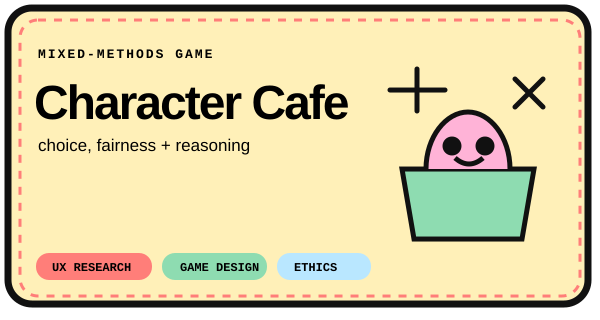
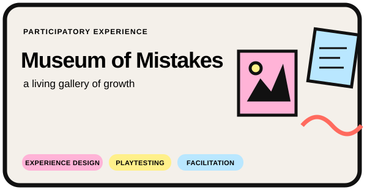
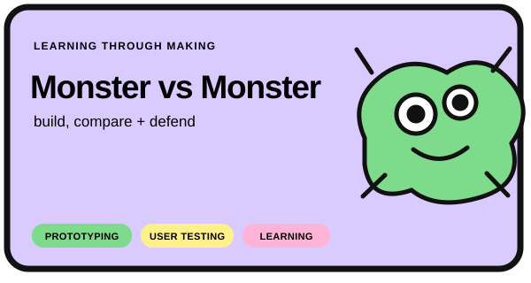
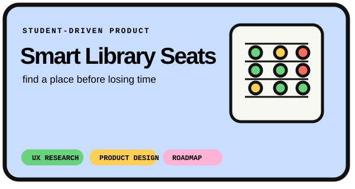
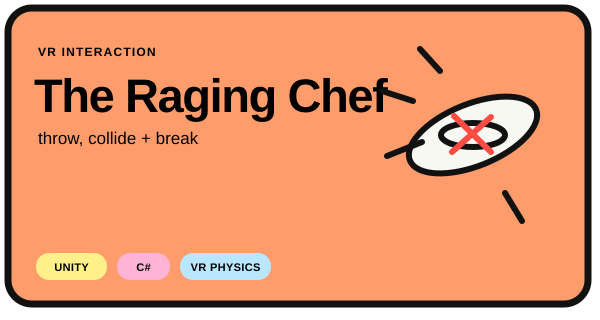
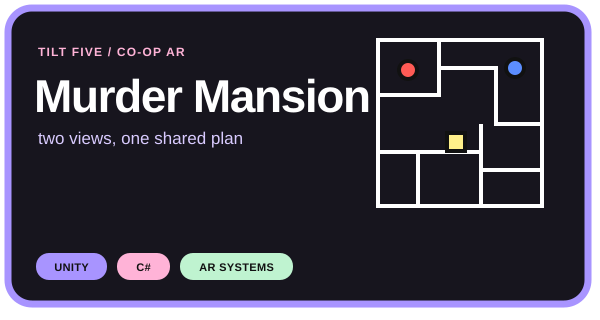
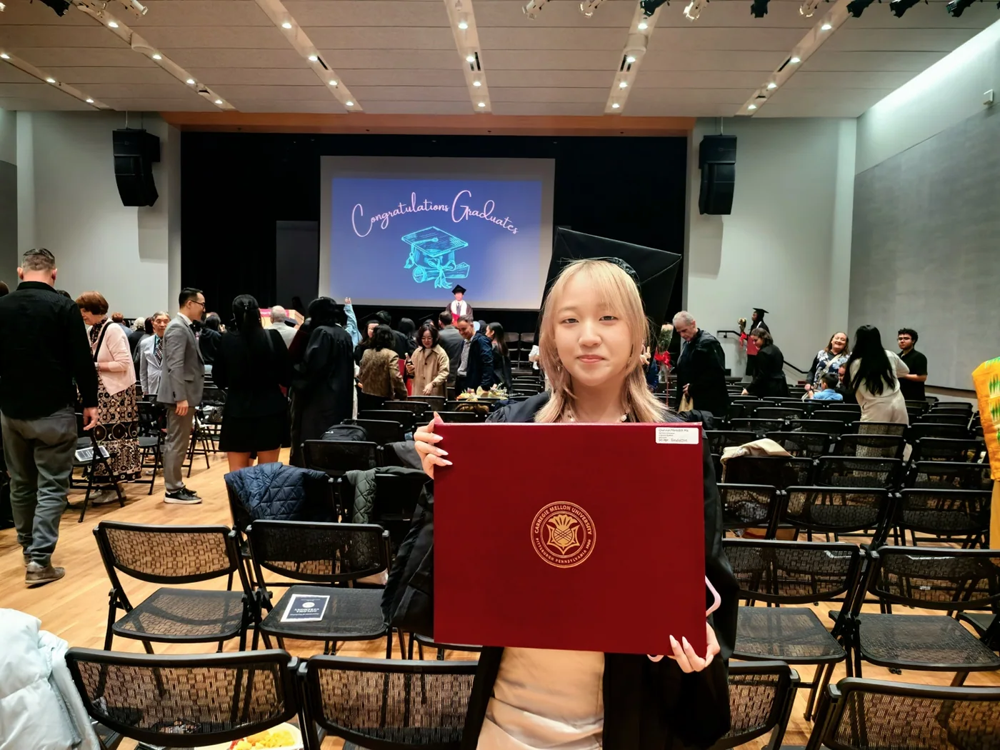

01
ChoiceMap
A decision journal for comparing options, examining assumptions, and reviewing outcomes later.
View repository ↗Software engineer × cognitive scientist × interaction designer
I build software and research experiences around decision-making, memory, language, attention, and everyday behavior.
01 / Software + product
Privacy-conscious macOS and web tools that support reflection without replacing human judgment.
A decision journal for comparing options, examining assumptions, and reviewing outcomes later.
View repository ↗A private Mac space for personal objects, daily notes, memories, and small experiments.
View repository ↗A visual diary that turns each day into one color and one optional word.
View repository ↗A private app for sending thoughts to your future self and meeting them again at the right time.
View repository ↗02 / Interaction design + UX
Digital, physical, and immersive experiences shaped through prototyping, playtesting, and iteration.






03 / AI + cognitive research
Projects connecting language, perception, collective memory, professional identity, and multimodal AI.
Compared archival and AI-generated images using CLIP, UMAP, BLIP captions, and keyword analysis.
Compared Mandarin and English color categories with mBERT and CLIP representations.
An exploratory qualitative study of language, professional identity, and belonging.
A community experience for intergenerational language and cultural connection.
Engineering foundations
04 / About
I’m Meredith, a Carnegie Mellon Cognitive Science graduate who likes working between engineering, research, and product design.
I care about calm interfaces, low cognitive load, ethical data practices, and tools that leave room for human judgment. My projects move between Swift, Python, AI/ML, Unity, qualitative research, and playful physical prototypes.
